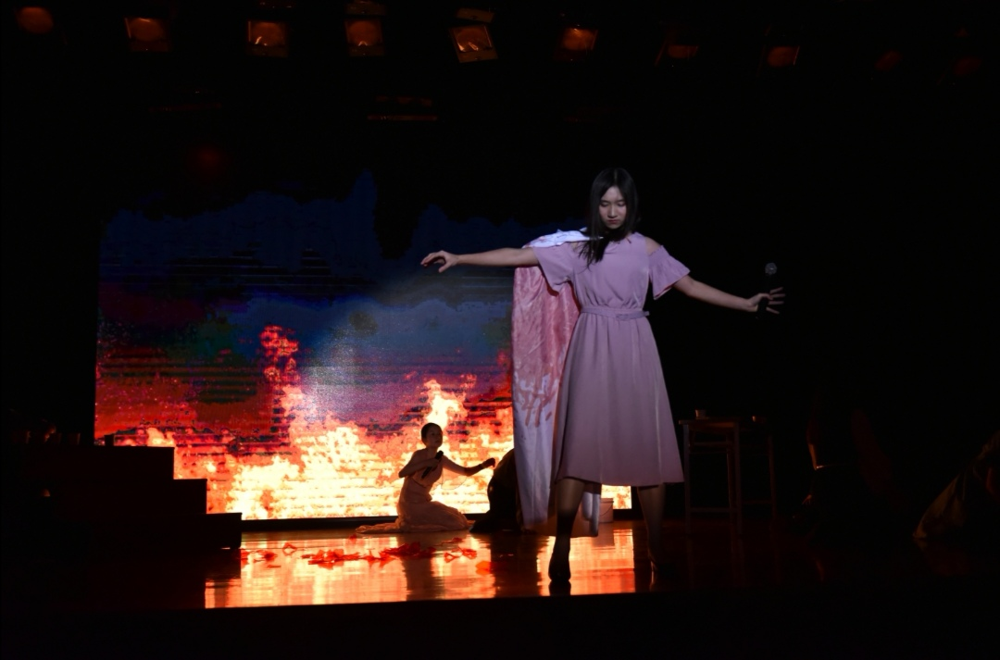
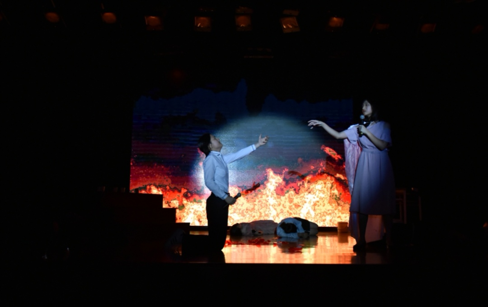
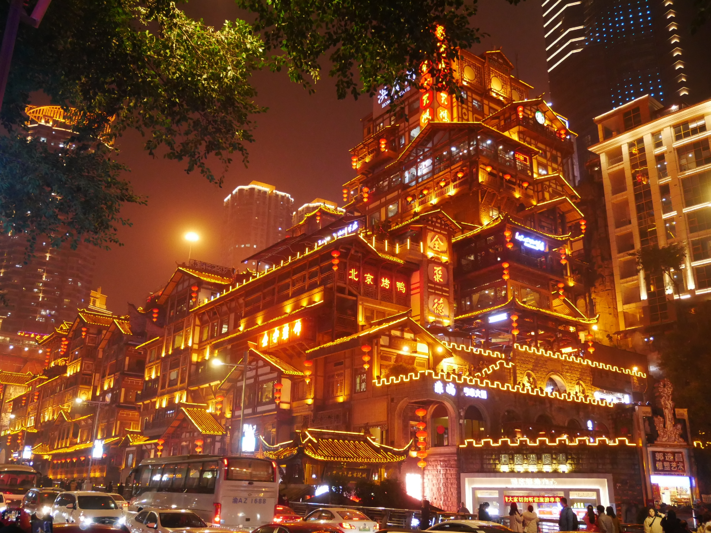
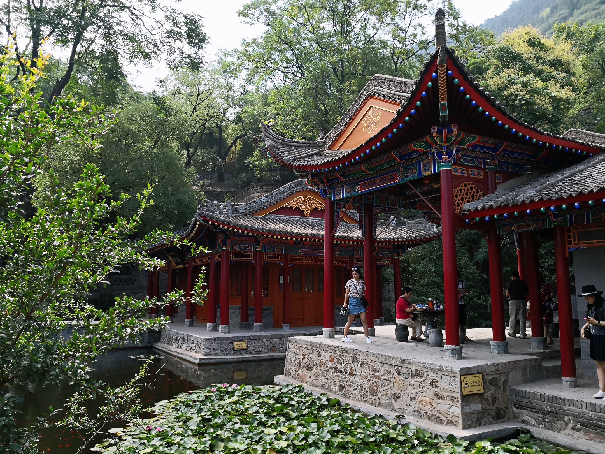
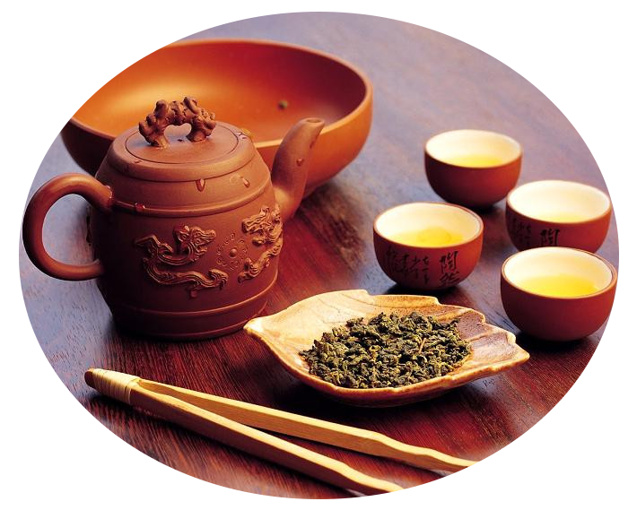

I am especially interested in music, especially ballads and ancient Chinese songs.I once learned bel canto and demotic singing for some time, and also mastered a variety of musical instruments,including piano, guitar, guzheng and so on. However, I gave up learning all of them except guitar because of the shortage of time. I took part in a number of singing contest, and won the title of 'top 10 singer' at our school. I also participated in the musical 'Carrie' and performed as the leading role.

Besides, I used to sing in our school choir and served as a DJ for the broadcasting of our school.Moreover, I am always trying to write my own songs. I once composed one and gave it to my best friend as her birthday present. In the future, I hope that I will know more about the arrangement of music.
Singers: Shanghai Rainbow Chamber Singers
Composer: Jin Chengzhi/Aaron Jin
Lyricist: Jin Chengzhi/Aaron Jin
Piano Accompanist: Bai Yuantong
Mix Engineer: Mo Jiawei
Countries I have been to:
China,Vatican,USA,Japan,Italy,France,Germany,
Australia,England,Switzerland,Mauritius,Vietnam...(I forgot)

I love travelling very much. I have been to a lot of countries and cities in China. However, during this summer holiday, there isn’t enough time for me to go abroad. Instead, I took part in the summer course at NYU and other colleges(2019). I hope that through this process, I will have a better knowledge about the campus and make a wise decision about choosing the college.
Many people may think that only middle-aged people love to drink tea,however,I am quite addicted to drinking all kinds of tea, such as Guanyin tea,Oolong tea, Longjing tea and so on. I recommend drinking tea to all of you! It is much healthier than drinking the milk tea sold in popular stores.

I enjoy watching comedies and reality shows such as 'Joy Comedian','The Smiling Proud Wanderer'.I like comic dialogue, especially performed by the 'DeYun' club. Besides, the short sketchs performed by Guoyang and Guoliang is well-recommended!
Performer:GuoDeGang
Performer:YuQian
back to the top